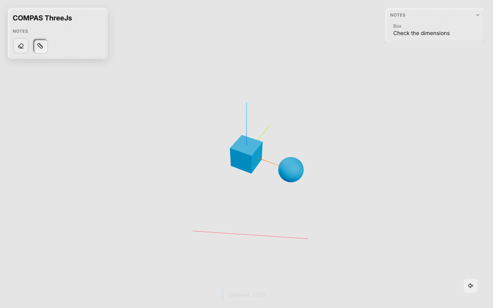

The Frontend Half, Explained¤
This page goes through the TypeScript half of a plugin step by step: what
definePlugin returns, how the page loads it, when each component is mounted, how
messages reach channel.on, and how Python's hide and disable reach a button. It ends
with an interactive tool built on beginInteraction.
It is the counterpart of The Python Half, Explained. The examples use the
Notes plugin from the tutorial.
definePlugin: a plain object¤
export default definePlugin({
name: "notes",
groups: { edit: { clear: ClearButton } },
setup(viewer) { /* ... */ },
});
definePlugin does nothing at run time. This is all of it:
It exists for TypeScript: wrapping the object checks every field against the
ViewerPlugin type and completes the field names in your editor. What the viewer needs
is the module's default export: an object with a name, and optionally title,
groups, objectActions, panels, api and setup.
So a plugin module is just an ES module:
plugin.js
├── imports "vue", "three", "@compas-dev/compas-threejs-ts" (left external, see below)
├── your components, compiled
└── export default { name: "notes", groups: {...}, setup() {...} }
From module to screen¤
When a tab opens, the page loads each plugin listed in plugins.json, then creates the
viewer with all of them:
flowchart TB
A["fetch plugins.json?workspace=…"] --> B
subgraph load["for each entry, in order"]
B["add <link> for plugin.css"] --> C["import(plugin.js)"]
C -- "ok" --> D["keep module.default"]
C -- "throws" --> E["console.error<br/>Unable to load the "notes" plugin<br/>(skipped, the others still load)"]
end
D --> F
subgraph create["createViewer(container, { plugins })"]
F["check names and ids<br/>(a duplicate: that plugin is left out)"] --> G["setup(viewer) of each plugin,<br/>in order; keep the cleanups<br/>(setup throws: that plugin is left out)"]
G --> H["mount the Vue app:<br/>toolbar, object actions, panels"]
end
H --> I["WebSocket connects:<br/>scene + kept messages arrive"]Points to take from it:
- A plugin that fails to import is skipped, with an error in the browser console. The viewer still opens with the other plugins.
- A broken plugin is left out, not the viewer. A second plugin with a taken
name, a plugin using an id twice acrossgroups, buttons,objectActionsandpanels, or one whosesetupthrows, is not loaded; the others are. Each failure shows an error notice and goes toonError(codeplugin_error), or the browser console. - A failing component or handler stays contained. A button, object action or panel
that throws while it sets up or draws becomes a small ! mark; one that throws later
(in a click) stays. A
channel.onhandler that throws doesn't keep the message from the others. Both show an error notice. setupruns before any component exists, once per page, inapp.pluginsorder. What it returns is called when the viewer is disposed, in reverse order.- Messages come after
setup. A handler registered insetupis in place before the first message from Python arrives, including the kept (key=) ones.
Shared libraries: the import map¤
The viewer page declares an import map:
{
"imports": {
"vue": "./assets/vue.js",
"three": "./assets/three.js",
"@compas-dev/compas-threejs-ts": "./assets/viewer.js"
}
}
A plugin built with these three left external keeps import ... from "vue" in its
plugin.js, and the browser resolves it to the page's copy:
flowchart LR
page["viewer page"] --> vue["assets/vue.js"]
page --> three["assets/three.js"]
page --> api["assets/viewer.js"]
notes["notes/plugin.js"] -. "import 'vue'" .-> vue
notes -. "import 'three'" .-> three
notes -. "import '@compas-dev/compas-threejs-ts'" .-> api
views["views/plugin.js"] -.-> vue
views -.-> apiOne copy matters because Vue keeps its state per copy. useViewer() asks Vue for the
viewer the page provided; a plugin with its own Vue asks a different Vue, finds
nothing, and throws "useViewer() must be called inside a viewer component". The same
goes for three: an object made with another copy of Three.js isn't a scene object to
the page's renderer.
Any other library (icons, a date library, ...) is bundled into plugin.js as usual.
Components and useViewer¤
Components reach the viewer through Vue's provide/inject. The page provides the
PluginViewer once for the whole app, and each button slot adds its own state:
flowchart TB
app["Vue app<br/>provides PluginViewer"] --> toolbar["Toolbar"]
app --> actions["Object actions"]
app --> panels["Panels"]
toolbar --> slot1["ToolbarSlot (notes/clear)<br/>provides { enabled }"]
slot1 --> btn["ClearButton<br/>useViewer() · useChannel() · useShortcuts()"]
panels --> slot2["ToolbarSlot (notes/list)<br/>provides { enabled }"]
slot2 --> panel["NotesPanel<br/>useViewer()"]useViewer, useChannel and useShortcuts use inject, and Vue only allows that
while a component is being set up: at the top level of <script setup>, before any
await.
<script setup lang="ts">
const viewer = useViewer(); // ✓ top level
const channel = useChannel("notes"); // ✓
function onClick() {
const viewer = useViewer(); // ✗ throws: not during setup
}
</script>
Call them once at the top and use the results anywhere. In a plugin's setup(viewer)
there is no component: the viewer is the argument, and viewer.channel(name) replaces
useChannel.
When each part is mounted¤
A component's state lives as long as it is mounted, and so do the handlers it registers. The parts of a plugin are mounted at different times:
| Part | Mounted | Unmounted |
|---|---|---|
setup |
runs once, before the viewer mounts | its cleanup runs when the viewer is disposed |
groups buttons |
at start | while Python hides the button or its group |
objectActions |
while an object is picked | when nothing is picked, or while hidden |
panels |
at start | while hidden - folding a panel keeps it mounted |
A disabled part stays mounted, greyed out and inert.
This decides where to keep state and where to listen:
-
State shared by components, or that must survive a remount goes in a module, outside any component - like
notes.ts: -
Listening for state Python keeps (
send(..., key=...)) goes insetup. An object action listening for it itself would be mounted only after the user picks something - long after the kept message arrived, and it isn't sent again. - Listening for events meant for one component can stay in the component with
useChannel, which unsubscribes when the component unmounts.
Messages¤
Sending¤
send serialises data as JSON and returns true if the message left. While the
WebSocket isn't open, it returns false and the message is dropped, not queued.
Sending is fire-and-forget: there is no reply to await. Python answers, if it does, as
a separate message.
Receiving¤
const unsubscribe = viewer.channel("notes").on("notes", (data) => {
notes.value = data as Note[];
});
Handlers are kept per plugin/action. When a message from Python arrives, the viewer
calls every handler of that pair, in the order they were added, with the decoded
data. A message that arrives with no handler for it is lost: there is no buffer.
sequenceDiagram
participant P as Notes (Python)
participant R as Viewer
participant S as setup handler
participant C as component (useChannel)
P->>R: {dispatch: "plugin", plugin: "notes",<br/>action: "notes", data: [...]}
Note over R: handlers["notes/notes"]
R->>S: handler(data)
R->>C: handler(data), if mounted
Note over S,C: notes.value = data<br/>Vue re-renders what reads itviewer.channel(name).on |
useChannel(name).on |
|
|---|---|---|
| Use in | setup, or any code |
components only |
| Unsubscribe | call the returned function (return it from setup) |
automatic, when the component unmounts |
data is typed unknown: it is whatever Python sent, so cast it to the shape your
Python half sends (data as Note[]), or check it.
Hide and disable: from Python to a button¤
notes.disable("clear") in Python reaches the button like this:
sequenceDiagram
participant P as notes.disable("clear")
participant R as Viewer store
participant T as Toolbar
participant S as ToolbarSlot (clear)
participant B as ClearButton
P->>R: plugin_buttons {plugin: "notes",<br/>hidden: [], disabled: ["clear"]}
R->>T: pluginButtons.notes changes
Note over T: hidden ids: not rendered<br/>(group or button)
R->>S: enabled = false
Note over S: greyed out, inert:<br/>no clicks, no focus, no popovers
S->>B: injected { enabled: false }
Note over B: ToolbarButton shows disabled<br/>useShortcuts stands downThe plugin's components don't need to do anything: wrapping each button, action and panel, the viewer's slot handles it. Two helpers also follow it:
ToolbarButtonrenders as disabled.useShortcutsin that component ignores its keys.
The message is kept by the server, so a tab opened later starts with the same state.
Keyboard shortcuts¤
- Keys are compared with
event.key.toLowerCase():"n","escape","?","arrowup". - The listener is on the viewer's root element: keys count while the focus is inside the viewer, not in another part of a page that embeds it.
- A key is ignored with Ctrl, Cmd or Alt held, while typing in an input, a textarea, a
select or editable content, while the component's button is disabled, and while a
plugin holds input with
beginInteraction. - A handled key gets
preventDefault(). - Shortcuts are bound while the component is mounted. A hidden button has none.
- Nothing arbitrates between plugins: if two bind the same key, both run. Pick keys the other plugins in your app don't use.
ToolbarButton's shortcut prop only displays the key in the tooltip; the binding is
useShortcuts.
Interactive tools: beginInteraction¤
A tool that turns clicks in the view into points (drawing, measuring, placing) needs
the clicks instead of the viewer: no picking, no other shortcuts. That is
viewer.three.beginInteraction(handlers), which returns a session:
stateDiagram-v2
[*] --> Idle
Idle --> Active: beginInteraction(handlers)<br/>clears the selection, focuses the canvas,<br/>state.interacting = true
Active --> Active: pointer and key events<br/>go to handlers
Active --> Idle: session.release()
Active --> Idle: another beginInteraction()<br/>→ handlers.onInterrupt()While a session is active:
onPointerDown,onPointerMoveandonKeyDownget the events.- Picking is off, and every
useShortcutsstands down. - Orbiting keeps working, so the user can turn the view mid-tool.
Only one session exists at a time. Starting a second one ends the first and calls its
onInterrupt, so a tool always learns that it has ended.
Here is a complete tool, a ruler that measures between two clicks on the ground plane:

<template>
<ToolbarButton
tooltip="Measure a distance"
shortcut="M"
:active="measuring"
@click="toggle"
>
<Ruler />
</ToolbarButton>
</template>
<script setup lang="ts">
import {
ToolbarButton,
useShortcuts,
useViewer,
type InteractionSession,
} from "@compas-dev/compas-threejs-ts";
import { Ruler } from "lucide-vue-next";
import * as THREE from "three";
import { onBeforeUnmount, ref } from "vue";
const viewer = useViewer();
const ground = new THREE.Plane(new THREE.Vector3(0, 0, 1), 0); // z = 0
const measuring = ref(false);
let session: InteractionSession | null = null;
let points: THREE.Vector3[] = [];
let removeLine: (() => void) | null = null;
function start() {
points = [];
session = viewer.three.beginInteraction({
onPointerDown(event) {
const ray = viewer.three.pointerRay(event);
const point = ray?.intersectPlane(ground, new THREE.Vector3());
if (!point) return;
points.push(point);
if (points.length === 2) {
showLine(points[0]!, points[1]!);
viewer.notify(`Distance: ${points[0]!.distanceTo(points[1]!).toFixed(3)}`);
stop();
}
},
onKeyDown(event) {
if (event.key === "Escape") stop();
},
// Another tool began its own session: this one is over.
onInterrupt: () => finish(),
});
measuring.value = true;
}
function showLine(a: THREE.Vector3, b: THREE.Vector3) {
removeLine?.();
const geometry = new THREE.BufferGeometry().setFromPoints([a, b]);
const line = new THREE.Line(geometry, new THREE.LineBasicMaterial({ color: "#e11d48" }));
const remove = viewer.three.addOverlay(line);
removeLine = () => {
remove();
geometry.dispose();
};
}
function stop() {
session?.release();
finish();
}
function finish() {
session = null;
measuring.value = false;
}
const toggle = () => (measuring.value ? stop() : start());
useShortcuts({ m: toggle });
onBeforeUnmount(() => {
stop();
removeLine?.();
});
</script>
What each viewer.three call does here:
pointerRay(event)- The world-space ray under the pointer, or
nullwhile the canvas has no size. The world is Z-up and in the same units as COMPAS, so points can go to Python as they are. addOverlay(object)- Adds a Three.js object of the plugin's to the scene. Overlays are never picked, and the returned function removes them. Disposing their geometry and material is up to you.
beginInteraction/release- As above.
release()can be called more than once safely. TheonBeforeUnmountreleases the session if Python hides the button mid-measure.
Register it like any button: groups: { tools: { measure: MeasureButton } }. The
plugin needs three and @types/three as dev dependencies to compile. At run time,
three is the page's copy.
Other viewer.three calls for tools of this kind:
| Call | For |
|---|---|
object(guid) |
the Three.js object of a backend geometry |
objects() |
every visible backend object, with its guid (snapping) |
pauseNavigation() |
stop orbiting during a drag; call the result to resume |
addPickGuard(guard) |
veto picks while guard(event) returns true |
holdObjectUpdates(guid) |
ignore Python's updates of an object while the user drags it |
viewportSize(), onResize(listener) |
screen-space overlays |
camera, canvas |
the Three.js camera and the canvas element |
viewer.objects.commitTransform(guid, matrix) tells Python that an object moved, which
is how a gizmo ends a drag.
Plugins that use each other¤
A plugin can offer functions to others through api:
// in the Notes plugin
export interface NotesApi {
count(): number;
}
export default definePlugin({
name: "notes",
api: { count: () => notes.value.length } satisfies NotesApi,
/* ... */
});
// in another plugin, at the moment it's needed
const notesApi = viewer.plugin<NotesApi>("notes");
if (notesApi) console.log(notesApi.count());
viewer.plugin(name) returns undefined when this page doesn't load that plugin; the
app or workspace may not include it. Ask for it when you use it, not in setup,
since a plugin listed later isn't set up yet.
For simple shared settings, viewer.state.snap ({ grid, angle }) is read and written
by any plugin. A drawing plugin sets the snap steps, and the gizmo follows them.
Without Python¤
The same plugin object works with the viewer used as a TypeScript library, without the Python server:
import { createViewer } from "@compas-dev/compas-threejs-ts";
import notes from "./notes-plugin";
createViewer(document.querySelector("#app")!, { plugins: [notes] });
channel.send then returns false (unless the viewer was given a send option) and
nothing arrives on channel.on. A plugin meant for both uses should work without its
Python half, or say that it needs it.
Checklist¤
-
plugin.jsdefault-exportsdefinePlugin({ name, ... }), with the Pythonname. -
vue,threeand@compas-dev/compas-threejs-tsareexternalin the build. -
useViewer,useChannel,useShortcutsare called at the top of<script setup>. - Ids are unique across groups, buttons, object actions and panels.
- State Python keeps (
key=) is received insetup, into module-level state. -
setupreturns a cleanup for what it registered. - Interactive tools handle
onInterruptand release their session on unmount. - Overlays are removed and their geometry disposed.